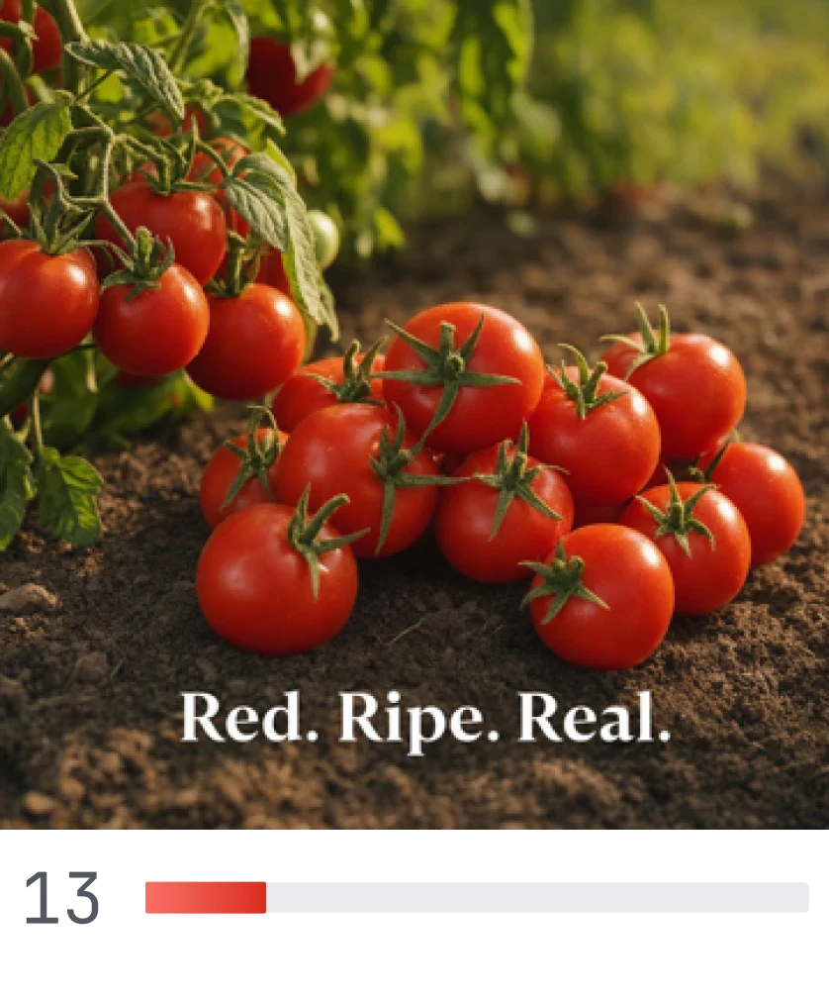
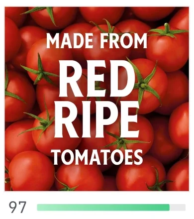
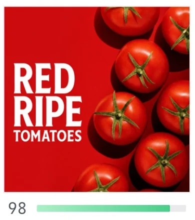
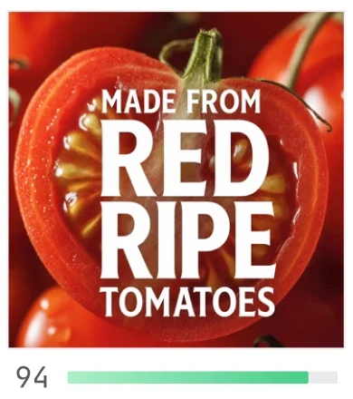
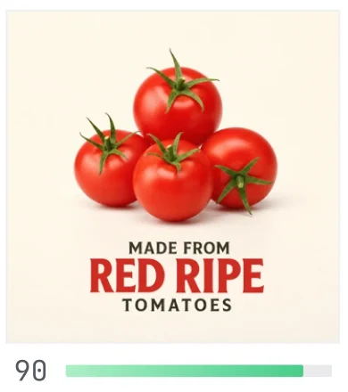
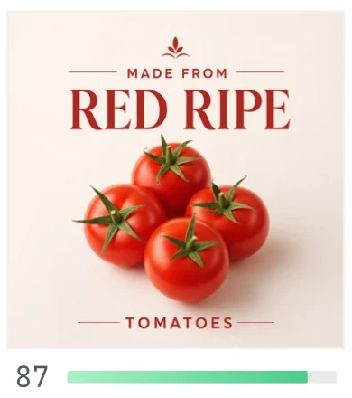

Spark AI reads every image in your category on Amazon and Walmart — then generates versions of yours built to beat them.
Spark carries your brand and product context through every step — generate, remix, refine, select. Then finish however your team works best.
Image generators make images that look good. Spark generates images proven to work in your category.
Spark AI classifies every image in your category on a retailer — hero, lifestyle, infographic, close-up, packaging — and learns which image types win. Before it touches your content, it knows the field.
Take any image on your product page. Spark Images generates up to five iterations — each built from the image types winning in your category, each carrying a Vizit score. Publish the strongest.






No score without a reason. Spark Ideas reads your image against Vizit Insight Maps and category intelligence, then hands your team specific, written direction — the changes that raise the number.
Spark Studio pairs Spark AI with Vizit-trained designers who optimize your content and hand it back, scored and ready to publish.